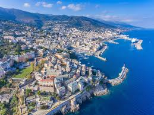
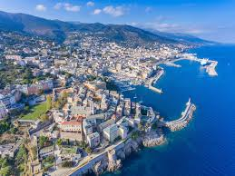
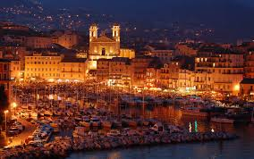
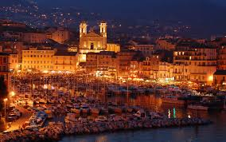

 



Bastia is a picturesque port city in northeastern Corsica, rich in culture, history, and Mediterranean charm. Known for its Genoese heritage, beautiful harbor, and authentic Corsican life, Bastia is both a tourist destination and a cultural treasure.
Originally a small fishing village called Cardo, Bastia became important when the Genoese built a stronghold there in 1380. Over centuries, the city evolved from a fortified Genoese capital to a modern French Mediterranean town. Bastia was the capital of Corsica until Ajaccio took its place in 1791.
The Citadel (La Citadelle) is a walled Genoese fortress with historic alleys and great sea views. It forms the heart of the Terra Nova district. The Palais des Gouverneurs, once the Genoese seat of power, now houses the city museum with exhibits on Corsican culture and art.
Église Saint-Jean-Baptiste, located near the Old Port, is the largest church in Corsica and features twin bell towers that are emblematic of Bastia’s skyline. The Old Port (Vieux Port) itself is a charming marina lined with colorful houses, perfect for walks and dining.
Other significant sites include the Place Saint-Nicolas, a large, shaded square where locals gather, and oratories such as the Immaculée-Conception and Saint-Roch, which showcase Bastia’s rich religious and architectural heritage.
The Musée de Bastia in the Palais des Gouverneurs is a key cultural spot, offering detailed exhibits on Corsican history from antiquity to the present. Bastia also hosts festivals like Les Musicales de Bastia and the Fiera di u Vinu wine fair, celebrating local traditions.
Bastia offers a range of accommodations: Hôtel des Gouverneurs in the Citadel for luxury with sea views, Hôtel Central Bastia for boutique charm, and Best Western Montecristo for budget-conscious travelers. Guesthouses such as Chambres d’hôtes Le Vieux Port and Casa Vecchia provide local hospitality, while vacation rentals are abundant for longer stays.
Dining in Bastia is a delight. Try traditional Corsican cuisine at A Scudella or gourmet plates at Ostella. Nova and Chez Vincent are local favorites, offering seafood, charcuterie, and homemade pasta. Don’t miss Corsican specialties like brocciu cheese, wild boar stew, figatellu sausage, and chestnut desserts like fiadone and canistrelli.
For relaxation, Arinella Beach and Lido de la Marana offer sandy shores and swimming spots. Hiking trails like Sentier des Crêtes give panoramic views, while a day trip to Cap Corse brings you to remote villages and scenic cliffs north of the city.
Bastia is accessible by air through Bastia-Poretta Airport, and by sea with ferries from mainland France and Italy. Public transport is available, but renting a car is ideal for exploring Corsica.
The best time to visit is spring or early fall, when the weather is pleasant and the crowds are fewer. Local markets, such as the morning market at Place de l’Hôtel de Ville, are excellent for picking up Corsican cheeses, meats, and crafts.
Bastia combines the charm of a historic port city with the soul of Corsica. From the Citadel to the beaches, its culture, cuisine, and landscapes make it an essential destination for travelers seeking authenticity and beauty in the Mediterranean.